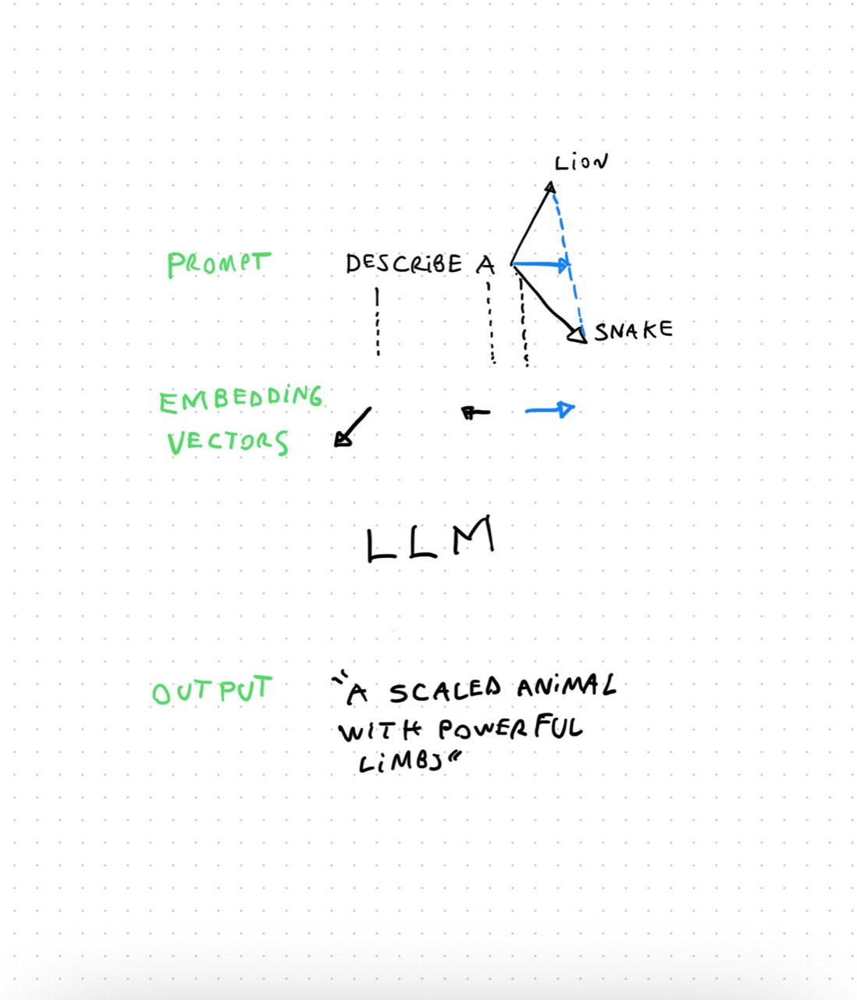
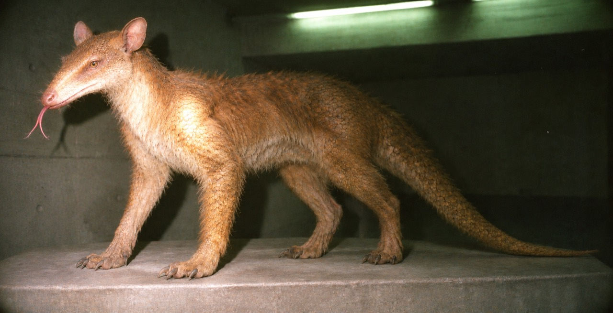
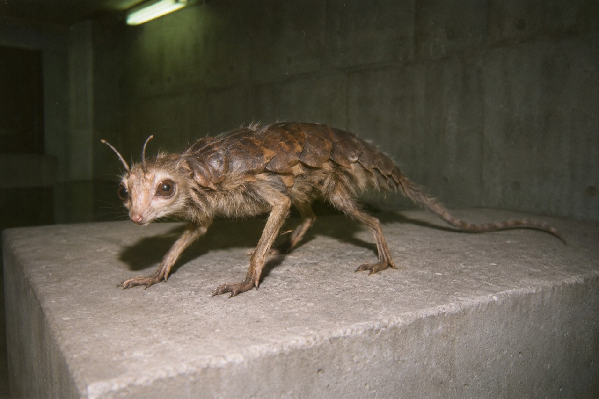
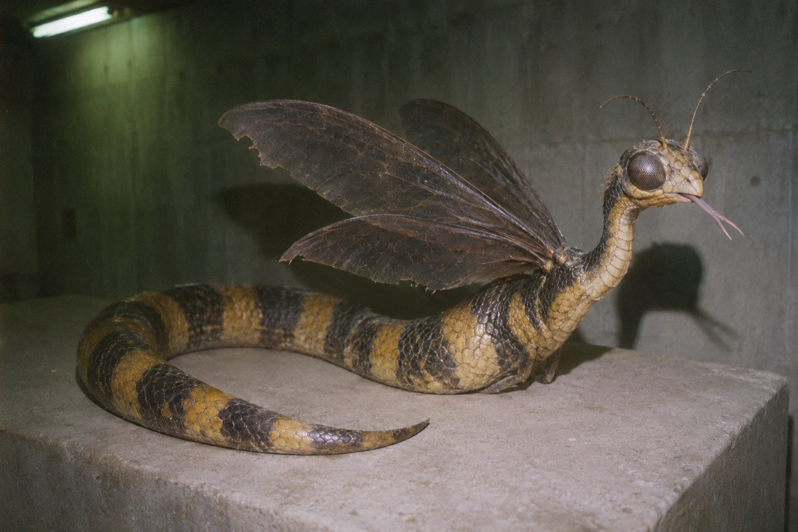
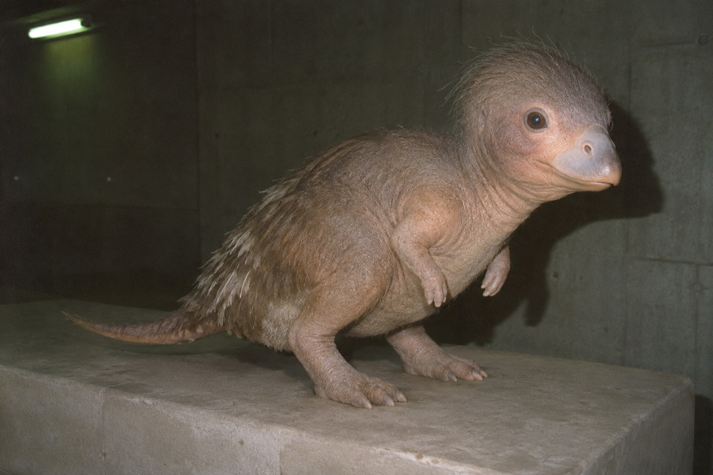

Chasing creatures in the embedding space
Instead of passing tokens to LLMs you can directly sent it vectors Talking to the model using vectors lets you explore the vast and continuous embedding space.

If you just ask what the creature looks like, you will get a description of either a snake or a lion. The trick is to require the model to omit the name of the creature in the description.
It turns out that when the model describes the creature, it will name it. The output vector for the name will be roughly halfway between snake and lion. When that vector gets projected to a token, the model will choose the closest token, either “lion” or “snake.” From that point on, the ambiguity between “lion” and “snake” will collapse to whatever token it chose, and you will get the description of a perfectly normal animal. You can avoid that collapse by asking the model to not name the creature, and you will get a description of a fantastical animal that only exists in the crazy embedding space.
Interestingly, the blending of features stays consistent when you change the wording asking about different traits.

The lion - snake blend produced this description:
The tawny fur of the creature blends seamlessly with the surroundings, providing camouflage in its natural habitat. Beneath the coat, scales line the underside of the body, a vestige of its evolutionary past. The elongated snout, equipped with a forked tongue, is a tool for both taste and touch, aiding in the detection of prey. From the snout, two visible external ears protrude, catching the slightest sounds. Powerful claws, retractable yet sharp, anchor the creature to the ground, ready for a swift pounce. A thick, muscular tail, tipped with a tuft of fur, swishes from side to side, balancing the body as the creature moves. Wings, though absent, do not hinder its agility; instead, they suggest a more terrestrial lifestyle, with four sturdy limbs ending in sharp claws, capable of both climbing and digging.
The idea of asking the model to describe the creature without naming it to avoid “meaning collapse” could be a nice trick to do when using Patchscopes.
Reproduction instructions, AI generated
Reproducing the interpolation experiment
Use Qwen2.5-7B-Instruct, the larger model used in the consistency experiments. The recorded configuration used NF4 double quantization for dense layers, float16 computation, and float32 embeddings and unquantized modules.
-
Construct continuous inputs. Extract the model’s 3,584-dimensional input embeddings for the single, unprefixed tokens
lionandsnake. Interpolate without normalization:v(t) = (1 − t)elion + t esnake, t ∈ [0, 1].Apply the standard chat template, embed the prompt, and replace the subject token’s embedding with v(t). Supply the resulting sequence through
inputs_embeds. Keep model weights fixed. -
Locate the blend region. Do not assume that t = 0.5 produces a hybrid. Sweep the interval in steps of 0.1, then refine regions where physical-feature answers change or combine endpoint traits. In this experiment, the midpoint was lion-like; mixed readouts appeared around t = 0.542–0.545. This location may change with the model, precision, or prompt.
-
Generate unnamed descriptions. Use a fresh context and cache for every trial. Example user prompt:
Describe the subject's physical appearance in three short sentences. Do not give its name, species, taxonomic category, or an identifying comparison. Start directly with physical details. Do not explain these instructions. Keep the entire answer within forty words. Subject: [injected vector]Use unrestricted greedy decoding (
do_sample=False,repetition_penalty=1.0) with a 128-token cap. Do not tell the model the endpoint names, interpolation coefficient, or intended hybrid interpretation. Record naming violations and truncated answers separately. -
Check features across wordings. Probe scales, limbs, fur, four legs, external ears, claws, tail, and wings using:
[injected vector] has scales. Is the statement true? Answer only Yes or No. Do not give the subject's name.Include affirmative and negative variants. Validate each wording on both ordinary endpoints before interpreting the blend; normalize negative statements when comparing answers.
The saved search found reproducible mixed feature readouts near 54.2–54.5% snake, but not a fully consistent anatomy. Compare otherwise identical description prompts with and without the no-naming instruction to evaluate its effect.
Testing competition between names
Capture the final hidden state entering lm_head and its full-vocabulary logits immediately before an animal-name token is selected. Apply softmax over the entire vocabulary and report both endpoint-name probabilities. This measures competition before discrete selection. The previously observed 59.23% snake / 40.42% lion result came from a separate Gemma 3 1B experiment; not a Qwen result.
Want to see more creatures?
Here are:


